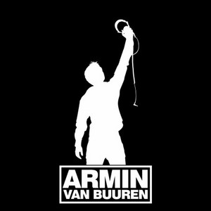
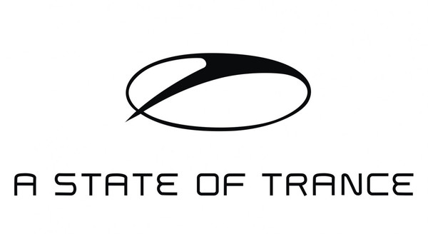
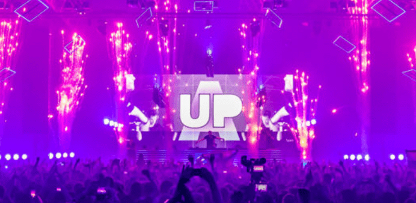

Armin Van Buuren
Dj and producer
DJ and producer Armin van Buuren is a born
perfectionist. His five-time number one position in
the critically acclaimed DJ Mag Top 100 DJs Poll
has been the result of his loyalty to fans, his
creativity in the studio, the perseverance with
which he hosts his weekly radio show ‘A State of
Trance’, and the energy he brings to the crowds in
front of him. Despite the heavy pressure that
comes along with being one of the world’s most
popular DJs, Armin has always kept his focus on
the music. And that’s exactly
what keeps him
going.
Welcome to my website:
www.arminvanbuuren.com RADIO SHOW
A STATE OF TRANCE
A STATE OF TRANCE
IS THE LARGEST
TRANCE NETWORK IN THE WORLD,
HOSTING A RADIO SHOW AND
FESTIVALS.
DURING OUR ASOT950 TOUR, WE WILL
CONNECT MUSIC LOVERS ALL AROUND
THE GLOBE ONCE AGAIN.
"LET THE MUSIC GUIDE YOU"
EVENTS
-
20"May 2021"
"THIS IS ME"
 Amsterdam, Netherlands
Amsterdam, Netherlands
-
21"May 2021"
"THIS IS ME"
Amsterdam, Netherlands
-
22"May 2021"
"THIS IS BLACH BLACH BLACH"
Amsterdam, Netherlands
NEWS
-

A STATE OF TRANCE 969
1. ARTY x NK - Prayer [Armada Music]
2. Taylor Torrence feat. Natalie Major - If We Say Goodbye (Rodg Remix) [Enhanced]
3. Mark Sixma presents M6 - Never Forgotten [A State O...
Read more -
A STATE OF TRANCE 968
1. Omnia - NVRLND [Armada Captivating]
2. Fatum - Take Me Back (Fatum Revamp) [Ride]
3. Arkham Knights – Subconscious (Taken from Distorted Reality) [Coldharbour]
4. Fariu...
Read more